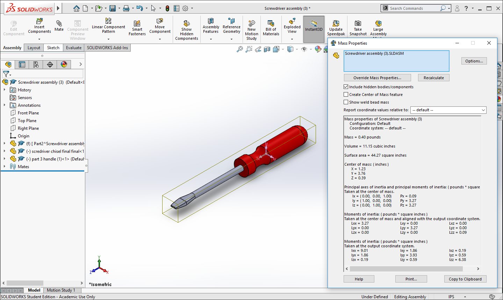
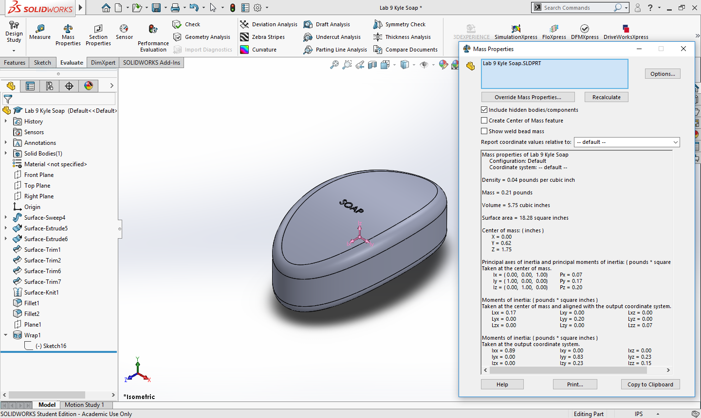
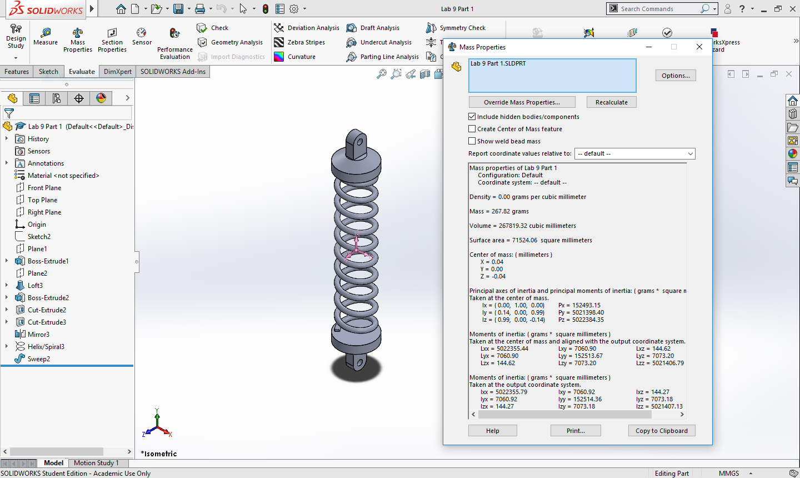
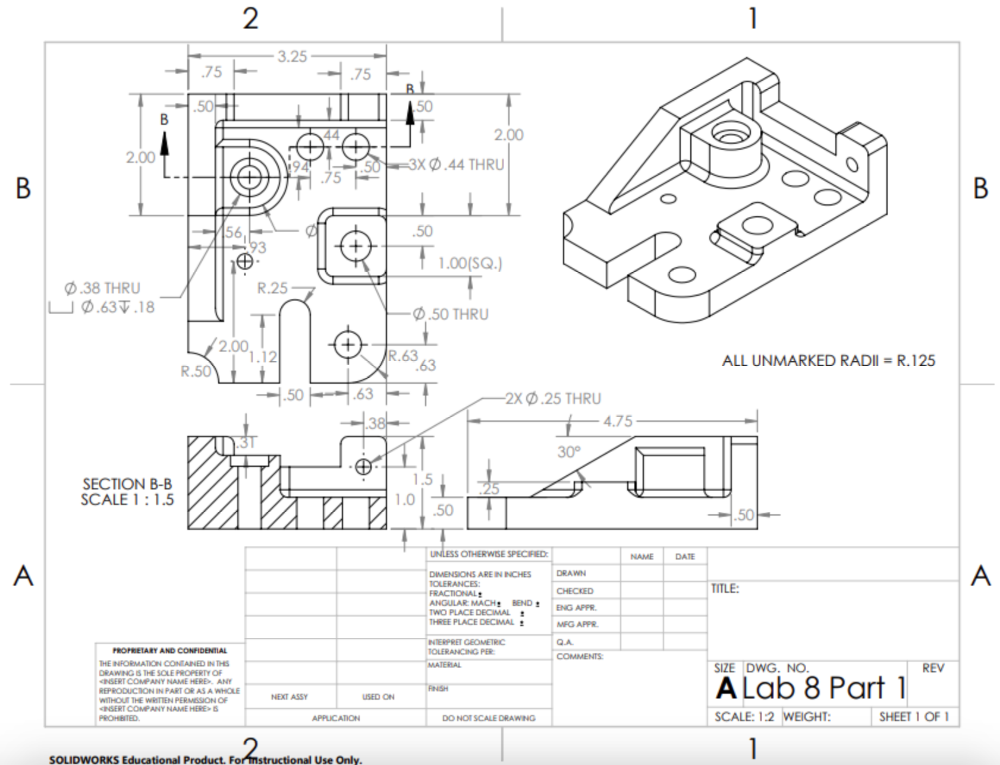
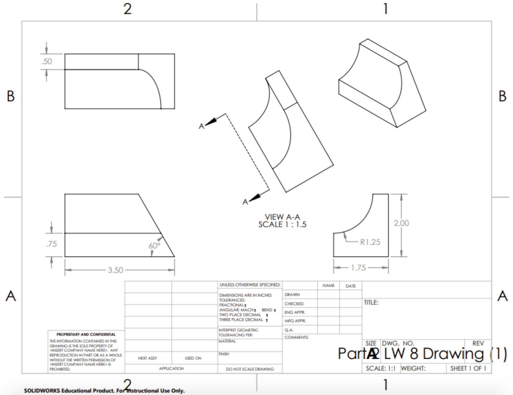

CAD Models
Though there were some CAD models in the other projects, these CAD models were just to practice honing some of the essential Solidworks tools necessary for CAD modeling, including extrusion, revolving, sweeping, lofting, surface modeling with knitting, and incorporating patterns for more parts with repeated features.
Screwdriver
This screwdriver consists of its assembled red plastic handle and its metal chisel. The handle was a simple revolve of half of its cross section, while the metal part used lofting to make its chiseled end and another loft to connect the metal shaft to the chisel.
Gear

For the gear, I first made the large circular part with its center hole and then used the circular pattern twice: once for the six inner holes and again for the exterior teeth.
Box Assembly
There are 5 labeled parts for this box, but in reality, I mirrored the top and bottom and made the minimal inclusion of the bottom's divot. After assembling the box, I exploded the assembly and labeled each part to show visually how each part is positioned.
Paperclip

This model required drawing the 2D curved line and using the sweep tool to give the paperclip its 3D shape.
Soap
I really enjoyed making this part because it introduced to me an entirely new paradigm of CAD modeling that centered around filling in the intersection of surfaces with the knit tool. I also filleted the edges for a smoother finish and added the text on top.
Spring
To make the spring, I first made the base with a simple revolve and mirrored it to the other end; then, I used the helix tool to fill in the middle spring part.
Handlebars

This model used a 3D line that adhered to the general shape of the handlebars, and, ultimately, I used a circular sweep to make the handbars thicker.
2D Shop Drawings
 These are some shop drawings I made after 3D modeling - with the standard isometric, top, front, and right views. Though Solidworks does a good job of dimensioning, I did go back and delete some of the redundant dimensions it included and added auxiliary views & section views when necessary.